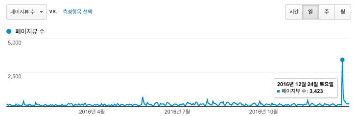

2016년 블로그 결산

블로그가 만 2년이 되어 간다.
내가 이렇게 오래 블로그를 운영하다니!
1. 방문자 추이
평균 방문자 수가 2015년엔 68이었는데, 올해는 154가 되었다. 두 배 넘게 성장! 정기 발행물인 한국의 파이썬 소식이 꽤 영향을 끼친 듯. 하지만 이탈율이 높다. 소식이니까 원래 그렇겠지만...

방문자수가 가장 높았던 날은 12월 24일. 파이썬 3.6 정식 버전이 12월 23일에 릴리스되자마자 주요 변경 사항을 정리해서 올렸는데, 이게 폭발. 덕분에 다른 날 방문자수가 안습으로 보인다.
2. 방문자수 Top 5
- 작년에 이어 파이썬, Django와 관련된 국내 블로그
- 괜찮은 Django Rest Framework 강좌를 찾아서 소개합니다가 2위. 괜찮은 블로그를 발견해서 올린 글이 이렇게 인기가 있을 줄이야... (Django Rest Framework 키워드로 유입되는 방문자가 꽤 있다.)
- 파이썬 3.6에서 바뀐 점이 3위. 발행 일주일 만에 3위라니 다른 글들이 얼마나 안 팔리면... ㅡㅜ
- (번역) Django Rest Framework 3 훑어보기가 두 계단 내려왔다.
- (번역) 파이썬에서 유니코드 스트림 다루기가 5위를 차지.
작년에 비해 Top 5안에서 번역 글이 하나 줄었고 순위도 4, 5위로 내려갔다. (작년엔 2, 3, 5위) 하지만 메타 정보가 아닌 독창적인 정보랄 수 있는 (엑셀만큼 쉬운) Django Annotation/Aggregation과 django 쿼리에 조건적 annotate 붙이기가 생각만큼 빛을 보지는 못해서 아쉽다. 제목이 문제인가!
운영 툴
블로깅 도구인 Ghost의 버전이 올라가면서 node 버전을 맞춰야 했고, 정적 사이트 생성기인 buster 역시 호환성에 문제가 터졌다.
결국 Ghost는 docker 이미지를 실행하는 방식으로 바꾸었고(docker 만세!), buster는 포크해서 개조. 올해는 buster로 배포하는 부분까지 docker로 감싸는 중.
힘들었던 점
매주 월요일에 올리려고 계획했던 한국의 파이썬 소식은 차츰 늦어져서 화요일로, 간혹 수요일에 발행하기도 했다. 어떤 주에는 정리할 소식이 없어서 곤혹이었고, 어떤 주는 소식이 너무 많아서 추리기가 어려웠다.
한국의 파이썬 소식을 일 년 정도 운영하다 보니 두 가지가 고민으로 남았다.
1. 이거 왜 하지?
처음엔 꾸준한 블로깅을 위해 시작했는데, 휴가 기간이나 개인사를 처리하는 날과 발행일이 겹치면 굉장히 힘들었다. 미리미리 준비하지 않아서 생기는 문제일 수도 있겠다.
아무튼 여름철부터 고민이 생겼고 11월 쯤까지 고민을 끌고 오다가, 다른 무엇보다도 내게 도움이 된다는 생각이 들었다. 소식을 전하자면 일단 나부터 읽어야 했다. 비동기 처리 같은 내용은 어려워서 넘어갈까 싶다가도, 읽지 않고 전달하면 왠지 안 되는 것 아닌가 싶어서 읽어 냈다.
2. 모든 소식을 다 싣지 않는다.
'한국에서 일어나는 파이썬 관련 소식'을 전하려고 했는데, 내가 놓치는 소식도 분명 존재한다. 간혹 발견해도 공유하지 않는 소식도 있다. 무슨 기준으로? 내가 뭔데?
그러다가 '이 소식' 자체도 사실 별 게 아니라는 결론을 내렸다. 일 년이나 지속했다는 사실 때문에, 나 스스로 '한국의 파이썬 소식'에 일종의 권위를 부여했었나 보다. 그런 거 쥐뿔도 없는데.
그냥 나라는 개인이 접한 파이썬 관련 소식들. 그 중에 한국에서 일어난 일들이 좀더 많이 알려졌으면 좋겠으니까. 그렇게 시작한 일이니만큼, 그렇게 이어가자.
2년이나 흘렀지만 여전히 볼 것 부족한 블로그에 방문해주셨던 모든 분들께 감사와 존경을 보낸다. 블로그를 읽으며 부족한 부분이 발견되면 서슴없이 raccoonyy @ gmail.com 으로 연락주시길...